6.USB device modeでのWi-Fi設定方法

USB device mode
USB device modeとは、マイクロUSBケーブルでPCとJetsonを接続することで仮想インターネットインターフェースが作成されることです。Jetson Nanoは電源をDCジャックにすることでこの機能を提供します。
この機能を利用するにはPCがドライバーをサポートしている必要がありますが、ドライバーをサポートしていないPCもあります。その場合は有線LANで接続してWi-Fiを設定するか、モニタとキーボード、マウスを接続してWiFiを設定する必要があります。
JetBotとPCをUSBケーブルで接続
マイクロUSBケーブルとPCを接続するとIPアドレスが割り振られます。
OLEDにIPアドレスは表示されません
このとき、JetBotは192.168.55.1の固定IPアドレスになります。この仮想インターフェースはOLEDの表示処理に入れていないため、OLEDにIPアドレスは表示されません。


USB経由では下記IPアドレスが割り振られます。
| 項目 | 値 |
|---|---|
| JetBot | 192.168.55.1 |
| PC | 192.168.55.100 |
PCからsshでJetBotにログインする
sshでJetBotにログインします。ユーザ名はjetbot、パスワードはjetbotになります。
sshクライアント環境が整っていない場合は、Secure Shell(Google製)を用いて、Chrome browserからsshでJetBotにログインします。
Secure Shellのインストール
Chrome ウェブストアにアクセスし、Secure Shellをインストールします。
 chromeウェブストアでSecure Shellを検索します。
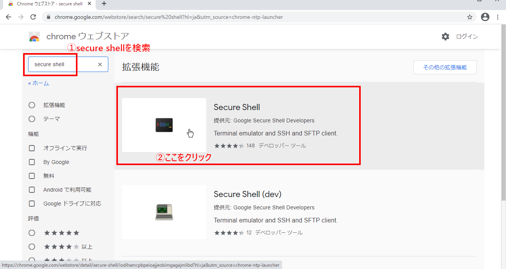
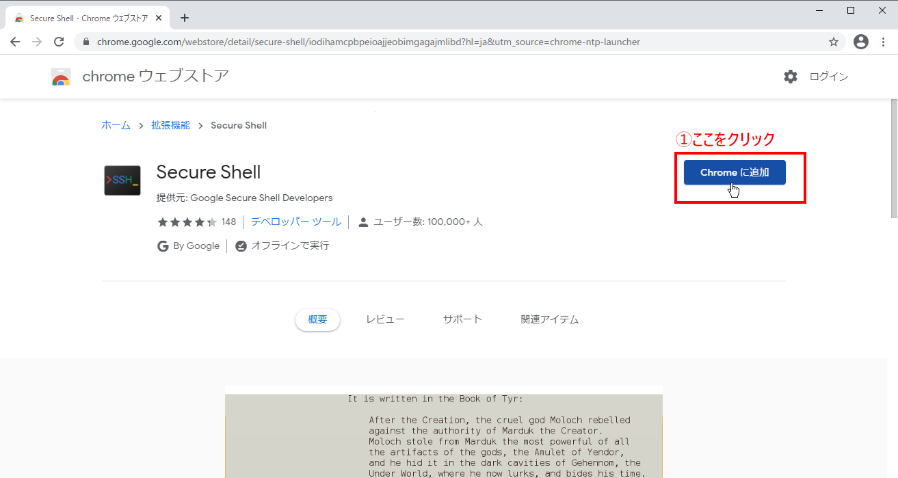
ポップアップ表示が出てくるので、「拡張機能を追加」をクリックしてSecure Shellをインストールします。
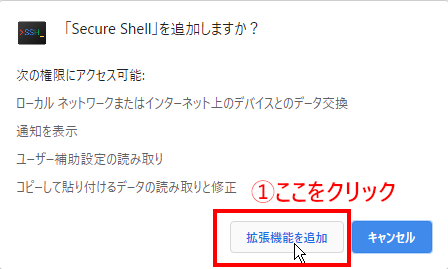
同期の有効化は特に必要ありません。
chromeウェブストアでSecure Shellを検索します。
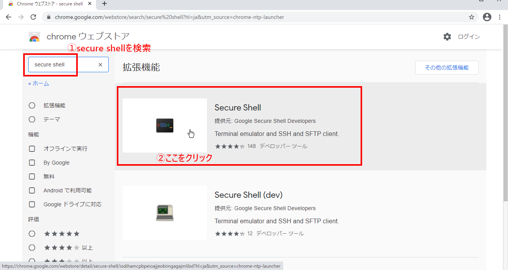
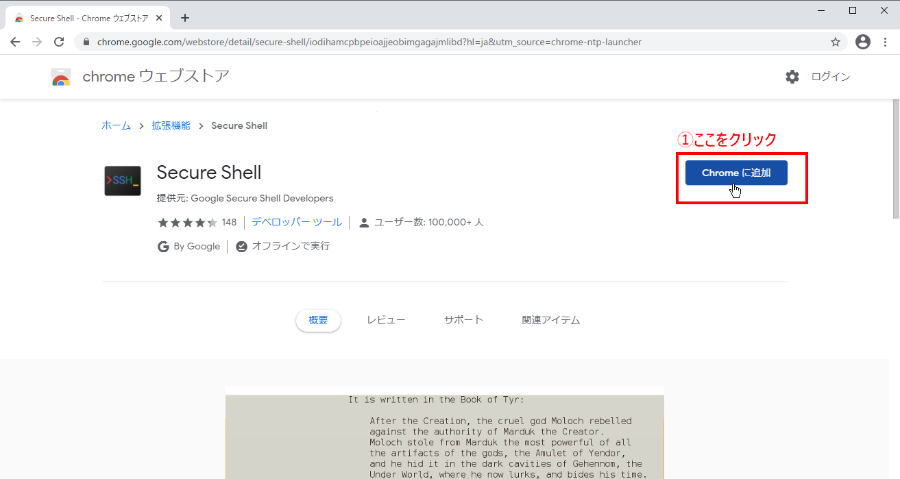
ポップアップ表示が出てくるので、「拡張機能を追加」をクリックしてSecure Shellをインストールします。
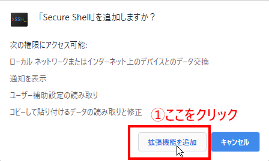
同期の有効化は特に必要ありません。

Secure Shellの実行
ブラウザの右上にあるツールアイコンからSecure Shellを起動します。

JetBotにログイン

| password |
|---|
| jetbot |
 JetBotにsshログイン成功。
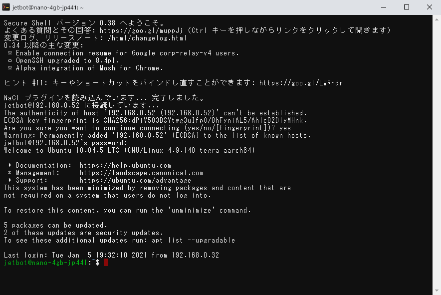
JetBotにsshログイン成功。
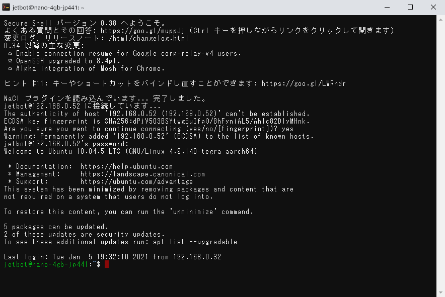
JetBotをWi-Fiルータに接続
JetBotのターミナルでWiFi接続のコマンドを実行します。アクセスポイント名とパスワードはお使いのネットワーク環境に合わせた値にします。
sudo nmcli device wifi connect 'アクセスポイント名' password 'パスワード' ifname wlan0
sudo実行の際に、パスワードを聞かれますので、下記を入力します。
| password |
|---|
| jetbot |
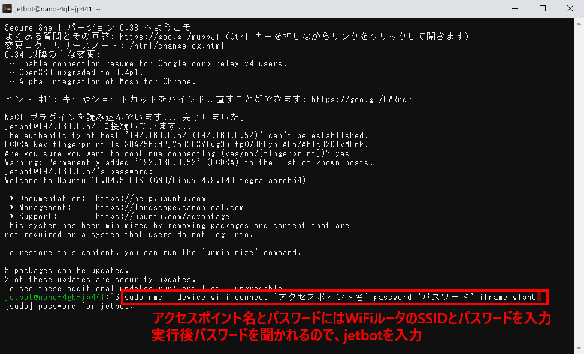
IPアドレスの確認
IPアドレスの確認はifconfigコマンドを用います。
ifconfig -a


| デバイス名 | 概要 |
|---|---|
| l4tbr0 | USBでPCと接続した際に使われる |
| wlan0 | Wi-Fiで接続した際に使われる |
USB経由でうまく接続できない場合（Mac偏)
Macのシステム環境設定ー＞ ネットワークを選択し、 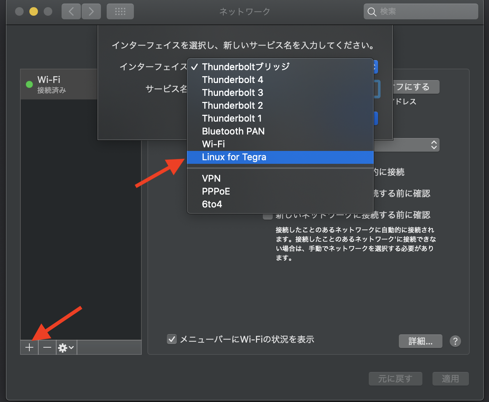 画面下の＋ボタンを押して、ダイアログが出てきますので、Linux for Tegraを選択します。 右下の適用ボタンを押します。 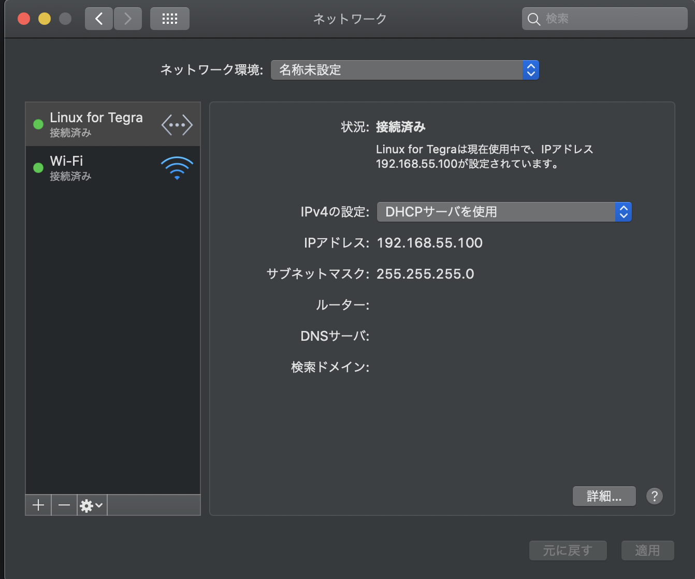 成功するとIPアドレスが割り振られます。